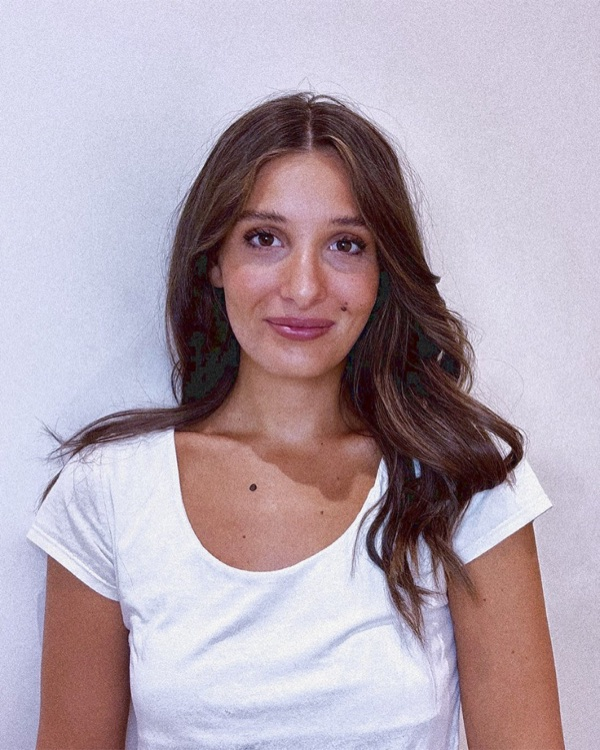

[Modeling & Prototyping]
3D modeling in Rhinoceros for complex geometries and prototype development workflows.

Hi, I’m Rosanna, a designer from Bari, currently based in Milan.
I hold a Bachelor’s degree with Honors in Industrial Design and a
Master’s degree in Exhibition Design from Politecnico di Milano
(110/110).
Moving cities and starting over shaped the way I see design:
I consider spaces as both functional systems and lived
experiences, influencing how we feel, move, and connect.
I create environments where every element contributes to a
larger narrative, with a focus on everyday needs and meaningful
interactions.
This portfolio reflects my journey and my way of thinking
through design.
A focused set of tools and practices that support the development, communication, and atmosphere of each project.
3D modeling in Rhinoceros for complex geometries and prototype development workflows.
Technical drawings and construction details supporting design development and production processes.
Visualisation in Enscape with post-production focused on materials, light, and atmosphere.
Graphic design and visual systems using Adobe Suite for project presentations and identity development.